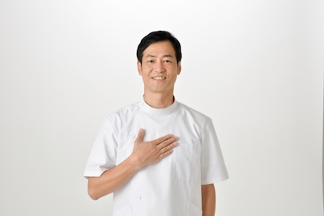

営業時間
10:00 ~ 20:00
火曜定休
その他不定休あり
ご予約しご来店ください
住所
◯◯県◯◯市◯◯町１１１
ご挨拶

はじめまして。店主の○○と申します。
カイロプラクティックとはなんだ？と思う方も多いかもしれません。 カイロプラクティックは身体の痛みや痺れの症状を単に改善するだけではなく、 施術を受ける事で人間が本来持っている身体を修復する機能を正常に働かせる事を目的としています。
エステやマッサージと異なり、体を支える骨の矯正を施すものです。
多くの方が悩まれる、頭痛・冷え性・腰痛・肩こり・生理痛なども実は骨の歪みが原因であることも少なくありません。 薬などでも改善できなかった体の不調がある方、是非カイロプラクティックをご検討ください。
施術中には、ご自宅でできる骨盤体操などのエクササイズを始めとしたケア方法などもお教え致します。